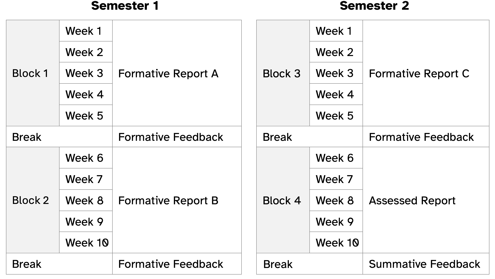
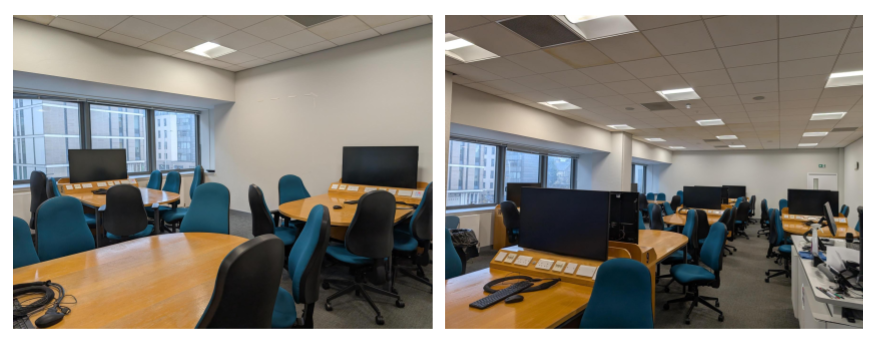

Peer Programming in Action: Pair Programming in Larger Groups
![]()
peer programming, group work, collaborative learning
Background
Umberto: I am a lecturer in the Department of Psychology at the University of Edinburgh, where I have been teaching data analysis and programming skills for many years now. I am the course organiser of a large first-year course called Data Analysis for Psychology in R1, or DAPR1 in short. This is typically taken by first-year Psychology undergraduate students, but the course also welcomes students from other disciplines.
“Peer programming” is what I (Umberto) like to call the extension of pair programming principles (Desvages et al. 2026) to groups of more than 2 students. The name highlights how this approach blends the benefits of peer support and pair programming. After multiple years of hands-on teaching experience using this approach, I believe its pros outweigh the cons. This chapter presents five case studies to illustrate peer programming in action, why it was implemented, which challenges it addressed, and the successes encountered.
DAPR1 is a 20-week long in-person course (10 weeks per semester) and a typical week on the course involves:
- Two lectures of one hour each. The first focuses on statistical concepts/methods; the second on how to implement concepts/methods in R
- A one-hour lab. This is a practical session, where students work to solve tasks with the support of tutors
- Assigned reading to consolidate knowledge
- A weekly quiz on the previous week’s material to ensure that students keep up with the course as its content is cumulative.
The 20 weeks are organised as four blocks of 5 weeks, where each teaching block focuses on a specific topic: exploratory data analysis, probability, inference, and common hypothesis tests. Figure 17.1 shows a visual schematic of the course. The course materials can be found on GitHub and the lab worksheets are visible here.

When in-person teaching resumed after COVID, student attendance at labs dropped substantially. After a couple of labs we regularly had more tutors than students. I wanted to find a solution to ensure students didn’t miss out on important contact time during which they could get support and guidance from staff. When the lab is over, the allocated hours of help are gone, and students have missed out on an important learning opportunity. Going to an empty lab is also demoralising for tutors who are there to help and end up waiting for an hour with no questions from students.
Based on student feedback and teaching experience gathered before I introduced peer programming, I noted three elements were key in driving engagement and attendance.
First, the transition from high school to university is a big change and for many students it can be isolating. Having a place to meet peers which also facilitates the start of new friendships is key to fostering a sense of community and belonging in a new environment. Students specifically left feedback that they didn’t feel part of a community and did not have a sense of belonging.
Second, students tend not to attend in-person labs if the worksheets include solutions. They just read through questions/solutions from the comfort of their home and post questions on the discussion forum. I tried withholding the solutions and only releasing them at the end of each week, but many students would choose to work at a one-week lag and on a given week they would work through the previous week’s worksheet which had visible solutions, rather than the current week’s worksheet.
Third, students left feedback that, as part of their courses/degree, they wanted more practice of writing lab reports to strengthen research skills such as planning, analysing, and disseminating findings. This was raised as part of the British Psychological Association re-accreditation meetings for our degree.
Taken together, the three elements above gave me a sense that it was key for students to work across multiple weeks to create an end-product, as a way to ensure that students engage through a sense of ownership of that product. Furthermore, working as part of a group introduces a sense of responsibility towards their group, so students show up to not let their team down. The steps I implemented, as discussed in this chapter, led to attendance at labs ranging roughly between 75% and 95% for four years in a row. Most importantly, they led to new friendships and support networks students could turn to for help.
Case Study 1: From Pair to Peer Programming
Peer programming was my response to applying pair programming to a large cohort, and it means pair programming in larger groups. DAPR1 has varied in size over the years, but it’s roughly been between 210 and 320 students. When planning the number of labs to run each week and the number of student groups to form the following constraints had to be taken into consideration:
- There is a limit on the number of tutors we can hire
- There is a limited number of “teaching studio” rooms, i.e. computer labs with a groupwork layout (see Figure 17.2)
- The teaching studios are heavily booked
- The teaching studios typically have a small number of tables
The above constraints limit the number of labs we can schedule each week, as well as the number of groups we can form for pair programming within each lab. In the end, I settled for 4 labs each week, and I ask students to work in groups of at most 5 students, where one group occupies a table. I couldn’t feasibly ask students to work in pairs due to space constraints and having multiple pairs at the same table was distracting for the groups and not appropriate when the work produced is to be submitted as an assessment.

When students attend their first lab session, they self-select a table as their group, and that will be their group for a semester. As with the standard pair programming model, one person in each group acts as the driver during a given session and the others act as navigators. Here, the driver is the student responsible for writing the code with the keyboard, while the navigators read the task, consult documentation pages, suggest the strategy to follow and fix any typos. Therefore, the driver has the support of multiple peers rather than just one navigator. Typically students self-organise such that one navigator has the tasks to complete open, another focuses on the R documentation/help pages and others suggest code and/or spot typos. The driver rotates after each session, ensuring that everyone in the group has contributed in a coding capacity (as driver) and in a strategic thinking capacity on how to solve a task (as navigators).
Case Study 2: Peer Programming as Scenario-based Tutor Training
As course organiser, I’m also responsible for hiring and training tutors, an important step to ensure the course runs smoothly. Each year, I hire a team of six tutors (who staff four labs each week, with four tutors per lab, and also help with the marking of assignments). It is essential that tutors receive training, for quality assurance and to ensure they feel confident explaining the material and addressing any issues or computing errors during the labs.
I try to maintain a balance of new and experienced tutors each year, to ensure there is continuity of expertise but also the building of new expertise for the future running of the course. Experienced tutors also act as informal buddies to new tutors who can shadow them in the first few weeks of the course to see hands-on how tutoring works.
Each week, I run a one-hour tutor preparation meeting where we all work through the lab worksheet that students will complete in that week’s labs. If students are expected to use peer programming in the labs, I believe that the best way to prepare tutors is to also run the preparation meetings as peer programming sessions. This leads to scenario-based training sessions that allow tutors to get hands-on experience with how peer programming works in practice, as well as the natural issues that appear when making typical typos/errors when typing the code for that week’s lab. This ensures the tutors have a preview of typical R errors they might have to help address in the labs.
Since the introduction of peer programming, the tutor preparation meetings have become an interesting discussion-based hour, where different perspectives are heard, new tutors strengthen their understanding, and it’s also a safe space to ask questions and seek clarifications as I act as navigator/driver when it’s my turn! When I’m the driver I also tend to assume the persona of a novice programmer who needs more guidance.
Case Study 3: Programming Towards an End-Product
To address the fact that lab worksheets with solutions could be completed from the comfort of home, the lab worksheets corresponding to the same block (each block comprises 5 weeks of teaching) are grouped in such a way that they together lead to the creation of a report. In other words, they are cumulative and each one builds on the context from the previous one.
The first three reports are formative, giving students the chance to obtain feedback when it matters most, i.e. while they are learning rather than at the end of the course. The fourth and last report is assessed. Students submit their work before they receive full solutions of each report and feedback on how to improve. Therefore, the lab worksheets only have tasks and hints available.
Working across multiple weeks motivates students to show up, as the different weeks are intertwined, and there is a shared understanding that people need to turn up and help to avoid the group falling behind, so students are keen to participate. This gives the group a sense of ownership and they tend to care about their work. Asking students to submit their end-product is also key to their engagement and attendance in labs.
Case Study 4: Peer Programming to Foster Belonging
Year 1 of an undergraduate or postgraduate degree is typically a year where students need to form new connections. Peer programming (as well as the standard pair programming) has been a key element to ensure students form a peer-to-peer support network and form new friendships. The student feedback from the DAPR1 course with peer programming implemented speaks for itself:
“I enjoy working in lab groups because I feel like it helps to have other people to learn and figure things out with.”
“To be honest, I really like the group work of DAPR1. Before, I didn’t participate in too many group activities, I prefer to study by myself. But the activities in the lab gave me a deeper understanding of group activities. Although I don’t want to admit that I actually have a lot of things I don’t understand about the study of DAPR1, the other members of the group helped me make up for it. Compared with self-study, group activities can gather everyone’s wisdom, complete homework better, and become good friends with group members. For me, who came to study abroad alone, this is really lucky.”
“The group work is very helpful. Not only have I made new friends, but I now also have people that I can rely on when I need help. Group work has also made the individual workload seem much lighter and we get things done faster.”
“Yes I have found it extremely helpful. During week one, I felt extremely lost and confused but my group helped me with that and so I think having that was very beneficial. In addition to this, it helped as different people were better at different aspects than others and it also meant we could spot each other’s mistakes quicker, before R tells you it will not work! I also think that it is really beneficial because it gives you the perfect opportunity to work with other people and make potential new friends.”
The above feedback, combined with the much improved attendance at labs, highlights the positive effect of peer programming on the student experience. Furthermore, many DAPR1 groups also become “study groups” for other courses and they end up meeting outside of class time.
Case Study 5: Peer Assessment to Encourage Active Contribution and Sense of Ownership
As educators, we may be concerned (and many students are) with the fact that any type of groupwork could have free riders, i.e. people who benefit from the work of others without meaningfully contributing to it. To help address this challenge I wanted to have in place a strategy to reward students who contributed to the end-product, where the “contribution amount” is based on ratings by their peers. With the help of the University’s learning technology team, I based the implementation on the WebPA tool by Loughborough University.
The assessed report created by each group receives a grade from the marker. 80% of the grade is fixed, while 20% of it is variable. Let me give an example: if a marker assigns a grade of 65 to the group report, 52 is the minimum grade that any group member can receive, and 13 points are distributed based on how much each person contributed as rated by their peers, using a Likert scale where 0 = None, 1 = Very poor, 2 = Minimal, 3 = Average, 4 = Good, 5 = Excellent. The rating is done within WebPA, where students use a form to anonymously rate their group members according to the following criteria:
- Overall, rate the positive impact of each group member’s contributions to the project
- Rate the extent to which each group member actively participated in group discussions/meetings
- Rate the extent to which each group member contributed to the analysis strategy
- Rate the extent to which each group member contributed to the code
- Rate the extent to which each group member contributed to the writing of the report
I ask students to self-enrol in groups on Blackboard Learn, the virtual learning platform used by our university. WebPA easily integrates with many virtual learning environment platforms, making it easy to perform the peer assessment of contribution for the same groups created in the virtual learning environment.
The fact that students know that their grades can go up or down based on their contribution has been a key motivator for students to show up and engage with the projects. We did notice more discussions during the assessed report, in comparison to the formative reports which are not peer-adjusted.
The 80-20 percentages were chosen keeping in mind that the tool is not foolproof. First, it can be played if everyone in the group agrees to rate someone in a specific direction. Second, it can happen that a submission which received a passing grade can become a fail after the peer adjustment. The 20% adjustment limits the occurrence of this issue, and a higher level can lead to more of such cases, which are often questioned during scrutiny or moderation.
Discussion
Peer programming has been a welcome addition to the DAPR1 course and, I believe, to the Psychology degree. Students have consistently given good ratings and feedback to the course, and the teaching is very interactive. It has been a pleasure to always enter into a lab room where there are active and lively discussions, and ideas bounce back and forth between students and tutors. Most importantly, students end up forming strong connections and leave the course having established a peer-support network they can turn to for help.